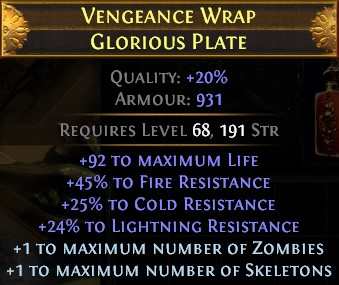

2) ★ 6링크 갑옷 : 20 카오스 내외?(corrupted), 30 카오스 이상?(no corrupted)

6링크 갑옷은 초반부터 구하기는 어려우니 액트를 밀면서 줍줍하는 갑옷들 중에서 3, 4링크가 있으면 쓰세요.
그러다가 약간 여유가 생기면 5링크 갑옷(1 카오스)을 구매하셔서 쓰시면 됩니다.
아니면 가끔씩 있는 타뷸라 나눔을 받게 된다면 그걸 쓰셔도 됩니다.
액트 밀고 아틀라스 노란 맵(6-10티어) 깨는데는 5링크로도 충분하니 천천~히 준비하세요.
최종 목표는 옵션 괜찮은 노커럽 6링 갑옷에 좀비/스켈+1 프리픽스 모드 크래프팅입니다.
신디케이트를 통해 얻을 수 있는데, 누구한테 얻는지는 묻지 마세요. 저도 걍 하다보니 얻은 거니까(...)
Q) 그냥 Summon Skeleton이랑 Vaal Summon Skeleton의 차이는 뭔가요?
A) 일부 스킬은 Vaal 버전이 따로 있는데, 스킬젬 하나가 일반 스킬과 필살기 느낌의 Vaal 버전, 2개의 스킬을 가지고 있다고 생각하시면 됩니다.
Vaal Summon Skeleton을 사용하면 30마리 이상의 스켈레톤을 소환할 수 있습니다. 보스방이나 신디케이트 등 까다로운 상황에서 쓰는데, 째깐둥이들이 떼거지로 나와서 매우 난잡해집니다(...)
그리고 Vaal~ 이 붙어버리면 더 이상 오브로 조작할 수 없게 됩니다.
그렇기 때문에 비기너분들은 Summon Skeleton 젬에 Vaal Orb를 바르실 게 아니라,
20퀄짜리 Vaal Summon Skeleton을 구매하셔야 되는데 이게 가격이 1 카오스입니다.
여유가 있으시면 구매하시되, 그 전까지는 그냥 Summon Skeleton을 쓰시면 됩니다.